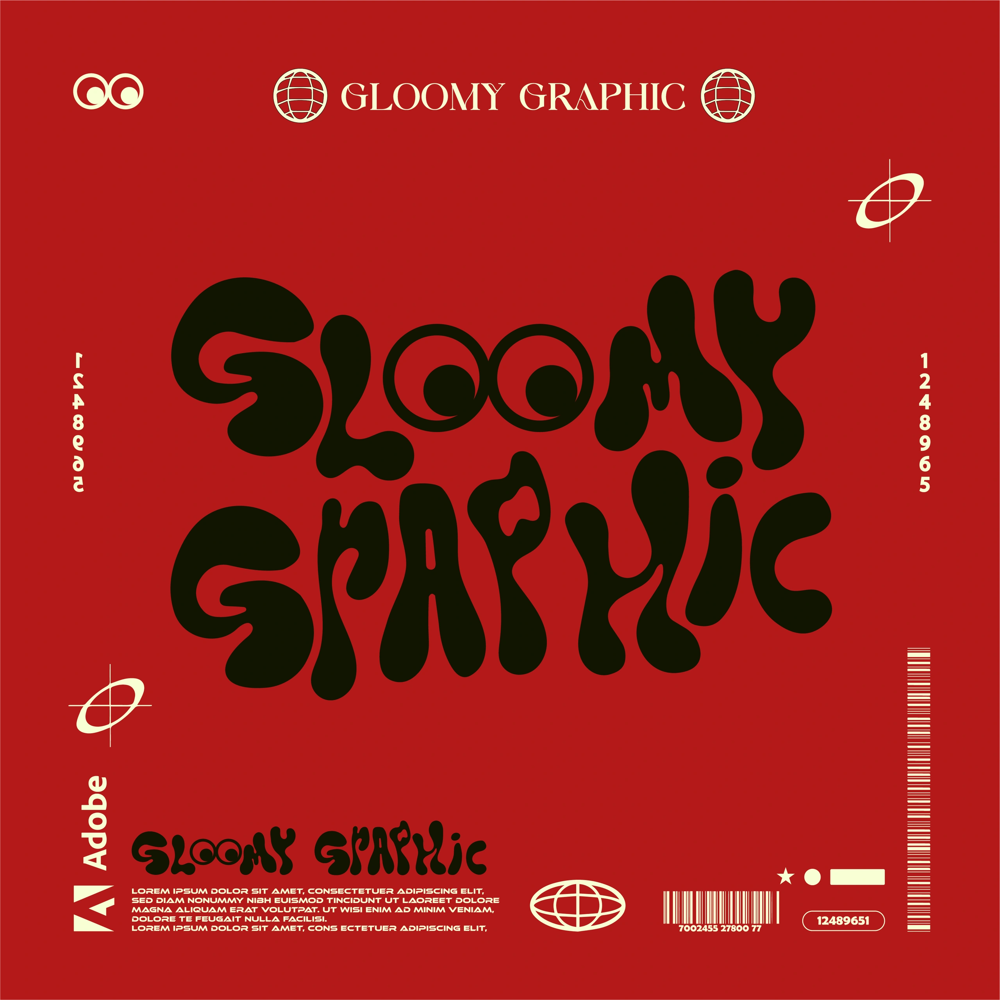
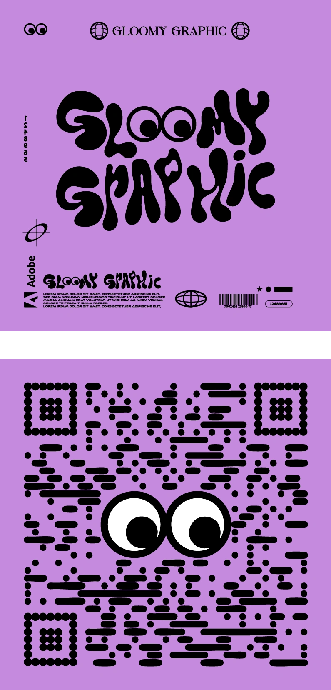

Gloomy Graphic

Une signature
qui me ressemble.
Gloomy Graphic est ma marque personnelle. Un univers sombre et dynamique, construit autour d’un lettrage organique, arrondi et fluide.
Les deux O deviennent des yeux. L’identité ne se contente pas d’être reconnue : elle installe une présence. Le motion prolonge ce langage par le rythme, les textures et les transitions.
- Création
- Tristan Raoult
- Champs
- Identité · direction artistique · motion
- Origine
- Marque personnelle · 2024
Deux O.
Un regard.
Le regard vient du lettrage.
Isolé, il devient le signe du sticker.

Le contraste. Le noir et le blanc donnent au regard sa présence.
La continuité. Le lettrage arrondi et le sticker partagent les mêmes formes.
Le regard
reste collé.
Touchez le sticker.
Juste de quoi sentir la matière.
Un langage
qui se décline.
Planches graphiques.
Support recto / verso.


Consulter les planches originales en couleur ↗
Retrouvez les planches complètes, sans traitement, dans leurs couleurs d’origine.
PERSONAL
GRAPHIC
UNIVERSE.
TRISTAN RAOULT
Le dernier mot.
Le même regard.